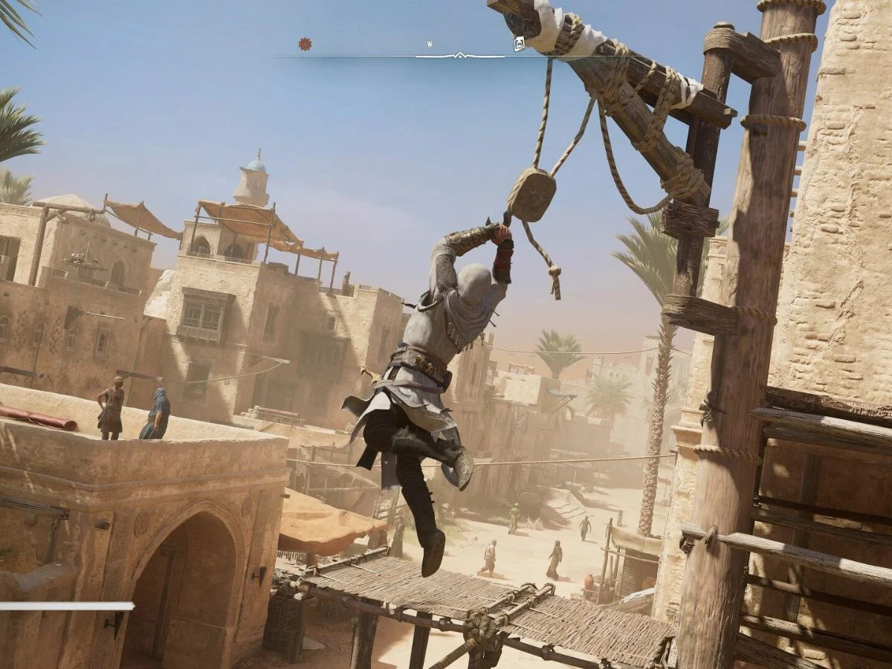
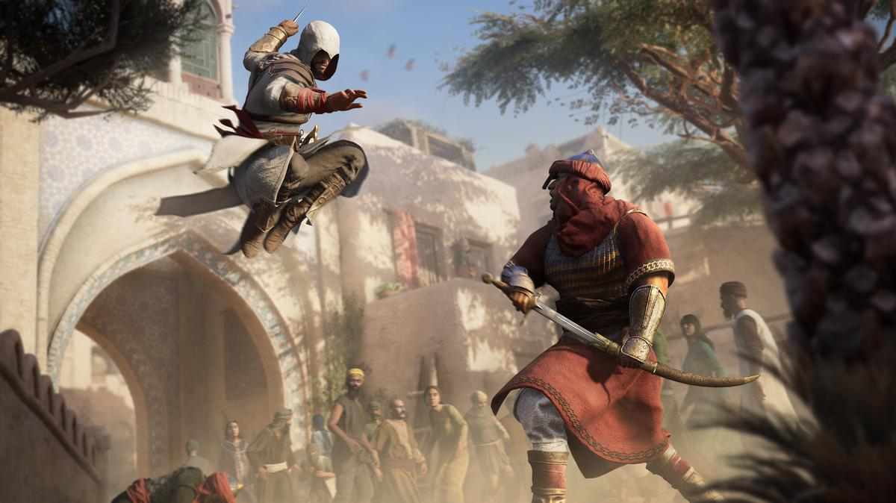

Infiltrez châteaux, temples et palais. Étudiez les rondes des gardes, frappez depuis l'ombre et disparaissez avant que l'alerte ne soit donnée.
Néo-Kyoto, 2089. Une relique de jade, l'Animus, renferme les souvenirs de mille ans de shinobis. Ceux qui la touchent revivent la vie de leurs ancêtres, et en héritent les techniques.
Ninjas de l'Animus est un jeu d'action-infiltration en monde ouvert développé par VoltJV. Plongez dans le Japon féodal de l'ère Sengoku, glissez-vous dans l'ombre des châteaux, courez sur les toits des villes fortifiées et éliminez vos cibles sans jamais être vu.
Mais chaque souvenir revécu modifie le présent. Ce que votre ancêtre accomplit au XVIe siècle redessine Néo-Kyoto, et ceux qui contrôlent la ville le savent. Ils veulent l'Animus. Ils vous veulent, vous.
Fondez-vous dans l'ombre. Le clan vous attend.
En 1560, au cœur des guerres de l'ère Sengoku, le clan Kage-no-Kai forge une relique
capable de capturer l'âme et la mémoire de ses guerriers : l'Animus. Ainsi, aucune technique, aucun secret,
aucun sacrifice ne serait jamais perdu.
Pendant des siècles, la relique passe de main en main, cachée dans les temples, sous les pagodes, au fond des
puits. Chaque shinobi qui la porte y ajoute ses souvenirs. Puis, un jour, elle disparaît.
Face au clan se dresse l'Ordre du Lotus Pourpre, une société secrète de daimyos, de
marchands et de moines qui manipule le pays depuis l'ombre. Leur conviction : seul un pouvoir absolu peut
apporter la paix. Leur méthode : contrôler chaque seigneur, chaque guerre, chaque héritier.
Le Kage-no-Kai leur oppose une devise simple : « Nous marchons dans l'ombre pour que d'autres vivent dans la
lumière. » Depuis cinq siècles, les deux camps se livrent une guerre invisible.
Néo-Kyoto, 2089. La mégacorporation Renkō Industries, façade moderne du Lotus Pourpre,
retrouve l'Animus dans les ruines d'un temple. Mais la relique ne répond qu'au sang du clan.
Vous incarnez Aiko, coursière dans les bas-quartiers de Néo-Kyoto, enlevée parce qu'elle descend sans le savoir
de Kaito, le plus grand shinobi de son époque. En touchant la relique, elle revit sa vie. En s'échappant, elle
emporte avec elle un secret capable de renverser l'Ordre, dans le passé comme dans le présent.

Infiltrez châteaux, temples et palais. Étudiez les rondes des gardes, frappez depuis l'ombre et disparaissez avant que l'alerte ne soit donnée.
Escaladez chaque mur, courez sur les toits et filez entre les pagodes grâce à votre kusarigama. La ville entière est votre terrain de jeu.

Si l'ombre ne suffit pas, dégainez. Parades, contre-attaques et exécutions rapides : un combat au sabre nerveux où chaque erreur se paie.

Passez du Japon féodal aux néons de Néo-Kyoto. Deux époques, deux mondes ouverts, une seule guerre secrète à remporter.
| Arme / Outil | Style | Particularité |
|---|---|---|
| Lame-griffe | Assassinat | Lame cachée dans le gant, élimine une cible en un coup |
| Katana | Duel | Parades et contre-attaques précises |
| Kusarigama | Mobilité | Faucille à chaîne : grappin sur les toits et attaque à distance |
| Shuriken | Distance | Lancers rapides et silencieux, récupérables |
| Fukiya | Furtif | Sarbacane : fléchettes endormantes ou empoisonnées |
| Bombes de fumée | Évasion | Aveugle les ennemis et brise leur ligne de vue |
| Tessen | Défensif | Éventail de fer : pare les flèches et désarme |
| Yumi | Précision | Arc long pour éliminer de très loin |
| Clochettes-leurres | Diversion | Attire les gardes loin de leur poste |
| Pulse-katana (2089) | Futuriste | Lame à plasma réservée aux missions dans le présent |
Le cœur du jeu, c'est l'Écho du passé. Chaque action de Kaito au XVIe siècle laisse une trace à Néo-Kyoto : épargnez un marchand et sa boutique deviendra, cinq siècles plus tard, un repaire de résistants ; laissez brûler un temple et ses ruines abriteront un laboratoire de Renkō. Le présent que vous explorez est façonné par vos choix dans le passé.
Pour maîtriser les techniques de votre ancêtre, il faut les revivre. Grâce à la Synchronisation, chaque mission réussie fidèlement débloque une compétence d'Aiko dans le présent : course murale, chute silencieuse, lame-griffe. Mais trop s'écarter du souvenir provoque une désynchronisation, et l'Animus vous rejette.
Activez la Vision des Kami pour percevoir ce que l'œil ne voit pas : les gardes deviennent des silhouettes rouges, les cibles brillent d'or, et les esprits des lieux vous murmurent les passages secrets. Plus vous l'utilisez, plus les ennemis apprennent à se cacher.
Votre Notoriété évolue en permanence. Soyez vu, et les avis de recherche se multiplient, les gardes doublent leurs rondes et les marchands refusent de vous servir. Arrachez les affiches, achetez le silence des crieurs publics ou changez de tenue pour retrouver l'anonymat.
Vous n'êtes pas seul. Reconstruisez le Clan de l'ombre en recrutant des alliés : une archère déchue, un moine guérisseur, un voleur des quais. Envoyez-les en missions à travers le Japon, appelez-les en renfort pendant une infiltration et faites-les grandir jusqu'à en faire des maîtres shinobis.
Le monde vit au rythme du cycle des lunes. La nuit, les ombres s'allongent et les toits se vident ; les jours de fête, la foule devient votre meilleur camouflage ; sous la pluie, vos pas ne s'entendent plus. Chaque mission peut se préparer en choisissant le bon moment.
L'Ordre compte des dizaines de membres à travers les époques. En voici six, du simple collecteur d'impôts jusqu'au cœur de l'Ordre.
| Cible | Rôle | Époque | Lieu | À savoir |
|---|---|---|---|---|
| Gonzō le Percepteur | Collecteur d'impôts | 1560 | Village d'Aokawa | Première cible : ne sort jamais sans ses gardes du corps |
| Dame Hisame | Courtisane espionne | 1561 | Quartier des plaisirs d'Edo | Connaît tous les secrets de la cour, mais ne fait confiance à personne |
| Maître Tenzen | Abbé corrompu | 1562 | Monastère du mont Hiei | Ses moines-guerriers protègent chaque couloir |
| Daimyo Oda Kurō | Seigneur de guerre | 1563 | Château d'Akagane | Change de double chaque nuit pour tromper les assassins |
| Docteur Sayuri Renkō | PDG de Renkō Industries | 2089 | Tour Renkō, Néo-Kyoto | Elle aussi a revécu des souvenirs dans l'Animus |
| Le Lotus Éternel | Grand Maître de l'Ordre | Inconnue | Inconnu | Son identité est le secret le mieux gardé de l'histoire |
Le jeu se divise entre deux mondes ouverts reliés par l'Animus : le Japon féodal de 1560 et la mégalopole de Néo-Kyoto en 2089.
Dans le passé, vous ferez vos premiers pas dans le village d'Aokawa, entre rizières et forêts de bambous, avant de rejoindre les ruelles animées d'Edo et ses marchés flottants. Plus haut, le mont Hiei cache ses monastères dans la brume, tandis que le château d'Akagane domine la province de ses murailles noires.
Dans le présent, Néo-Kyoto superpose les anciens temples et les gratte-ciel de verre. Des bas-quartiers inondés de néons jusqu'au sommet de la tour Renkō, chaque lieu que vous avez connu en 1560 existe encore, transformé par vos choix.
| Information | Détail |
|---|---|
| Titre | Ninjas de l'Animus |
| Studio | VoltJV |
| Genre | Action-infiltration, monde ouvert |
| Modes | Solo |
| Plateformes | PC, PlayStation 5, Xbox Series X|S |
| Classification | PEGI 18 |
| Langues | Français, anglais, espagnol, allemand, japonais (doublage japonais intégral) |
| Contenu au lancement | 2 mondes ouverts, 40+ cibles, 10 armes et outils, 6 alliés à recruter |
| Prix | 69,99 € (édition standard) |
Faut-il jouer en infiltration ?
Non. La furtivité est récompensée, mais chaque mission peut aussi se terminer au sabre. À vous de choisir votre voie.
Combien de temps passe-t-on dans le présent ?
Environ un quart du jeu. Le passé reste le cœur de l'aventure, le présent sert à voir les conséquences de vos actes
et à affronter Renkō Industries.
Le jeu propose-t-il un mode multijoueur ?
Pas au lancement. Ninjas de l'Animus est pensé comme une aventure solo, mais vos alliés du clan vous épaulent en
mission.
Le jeu contient-il des achats intégrés ?
Uniquement des tenues cosmétiques. Aucune arme ni compétence n'est payante.